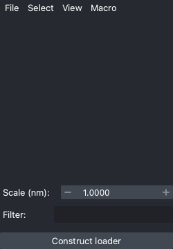

Construct Batch Loaders
To run subtomogram averaging across many projects, you need to construct a "batch subtomogram loader". A batch subtomogram loader is basically a list of image and molecules that you are going to use. Therefore, you need to select the images and, for each image, the molecules.
Methods are in the ui.batch namespace. The "Batch Analysis" widget is in the menu
Analysis > Open batch analyzer or Ctrl+K → B.
Construct in GUI
1. Add projects
Loader construction in GUI begins with adding project files. In the "Batch Analysis"
widget, there are two menubars. In the left one, click File > Add projects or
File > Add projects with wildcard path to add project one by one.

2. Select projects and molecules
After projects are added, you can select which projects and molecules to be included for
loader construction by the checkboxes. You can also select them by name patterns;
See Select > Select projects by pattern and Select > Select molecules by pattern.
3. Filter molecules
If the molecules need filtration, specify the expression
in the "Filter:" box. Note that the spline global properties are also available as the
expression with suffix "_glob". For example, to select molecules created from 13-pf
microtubules, you can use the expression col("npf_glob") == 13.
4. Construct a loader
If everything is ready, click Construct loader button. After it asking you for the
loader name, constructed loader will be added to the combo box on the right side.
Construct Programmatically
If you construct loaders programmatically, the process is not split into steps as in GUI. You'll have to specify the paths, filter predicate and the name at once, and the loader will be constructed immediately.
Low-level API
API: construct_loader
The low-level API is rarely used on the user side.
ui.batch.construct_loader(
paths=[
("path/to/image-0.tif", ["Mole-0.csv"]),
("path/to/image-1.tif", ["Mole-0.csv", "Mole-1.csv"]),
],
predicate=None,
name="Loader",
)
Construct from a list of paths
The simplest way to construct a loader is to provide a list of paths of project files. If you want to use wildcard patterns, see Construct from a file pattern.
ui.batch.construct_loader_by_list(
project_paths=[
"path/to/project-0.zip",
"path/to/project-1.zip",
"path/to/project-2.zip",
],
mole_pattern="*-ALN1.csv", # only use molecules with name ending with "-ALN1.csv"
predicate="col('npf_glob') == 13", # only use molecules from 13-pf microtubules
name="Loader",
)
Construct from a file pattern
API: construct_loader_by_pattern
ui.batch.construct_loader_by_pattern(
"path/to/project-*.zip",
mole_pattern="*-ALN1.csv", # only use molecules with name ending with "-ALN1.csv"
predicate="col('npf_glob') == 13", # only use molecules from 13-pf microtubules
name="Loader",
)